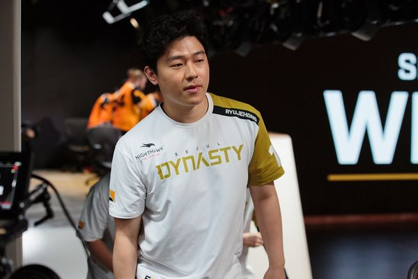

Star Player of Overwatch
Ryu Je-hong (Hangul: 류제홍, born September 5, 1991), better known mononymously as ryujehong, is a South Korean former professional esports player, best known for his career as an Overwatch player. During his Overwatch career, he played for the Seoul Dynasty and Vancouver Titans in the Overwatch League (OWL), and prior to the OWL's inception, he played for Lunatic-Hai in Overwatch Apex.
